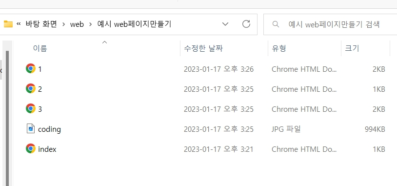
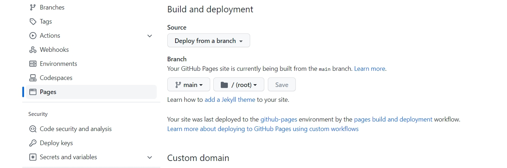

- strong, u, h1~h6
- br, p
- img, src, 크기조정 width
- li, ul
- 글의 구조 : title, head, body, html, !doctype html
- a, href, target
- 웹사이트 만들기
웹사이트 만들기
>> 웹사이트란? (web site)
링크를 통해서 서로 결합되어 있는 웹페이지들의 그룹
>> 만들 때 어떤 순서로 할 것인지가 중요

>>이고잉의 '생활코딩'을 예제를 참고하여 만든 첫 web이었습니다.

>>처음 github도 만들어보았습니다. 깃린이 뿌듯.ㅎㅎ